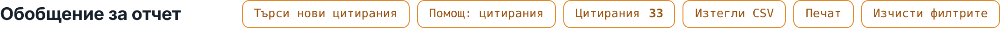
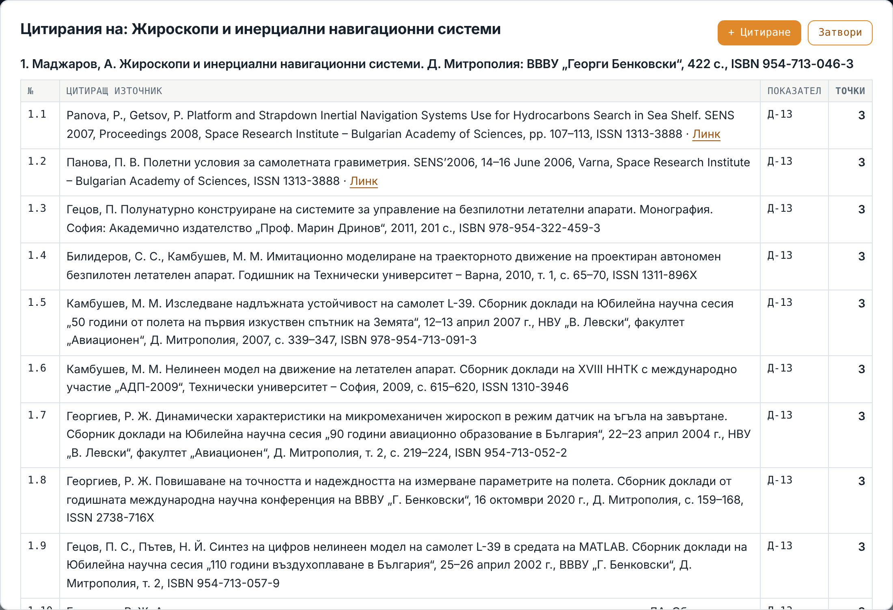
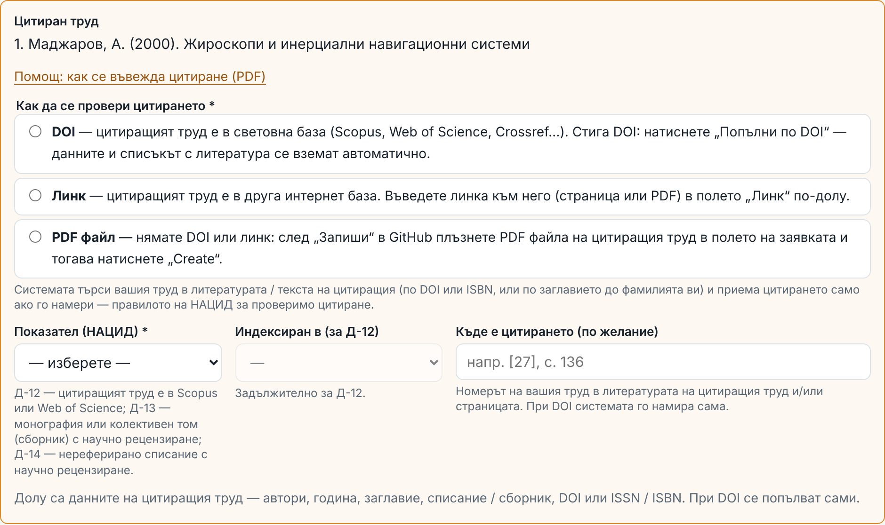

Ръководство за потребителите с акаунт в GitHub · URSlab, Институт по роботика – БАН · октомври 2026 г. · версия 1.0.0
За кого е. Въвеждане и потвърждаване на цитирания могат само потребителите с GitHub акаунт (бутонът „+ Нова публикация“ в „Състав“) и ръководителят. Цитиранията се виждат в „Обобщен отчет“ на всеки потребител и влизат в точките му по НАЦИД (група „Д“).
1. Къде са цитиранията
„Състав“ → вашата карта → „Обобщен отчет“. Под годината на всяка излязла публикация има бутон „Цитирания X“ — X са точките от проверените ѝ цитирания. В „Обобщение за отчет“ „Цитирания X“ е сборът за избраните с филтрите публикации; при натискане излизат всичките им цитирания по образеца на НАЦИД.

„Обобщение за отчет“: „Търси нови цитирания“, „Помощ: цитирания“, „Цитирания X“ (сбор за избраното) и квадратчето „Точки НАЦИД“ с бутон „Таблица по имейл“.
„Точки НАЦИД“ — таблицата по групи А–Е на Минималните национални изисквания, Област 5 „Технически науки“ (ППЗРАСРБ; Правилник на БАН; Вътрешни правила на ИР-БАН), не е на сайта. Бутонът „Таблица по имейл“ отваря заявка в GitHub → „Create“; до 2–3 минути идва писмо с приложен PDF — таблицата за следващата длъжност, стратегия (недостиг по групи и най-изгодният път), чакащите цитирания и, ако сте в регистъра на НАЦИД, справка как са отразени трудовете ви. Писмото получават само потребителят и ръководителят; в заявката няма числа. Трудовете и цитиранията, представени в предишна процедура, не се броят повторно (ППЗРАСРБ, Приложение, т. 8–9). Група Д (цитирания) се изчислява от цитиранията в Системата — въведените на ръка, през формата и с отметка в „[Нови цитирания]“ — затова всяко потвърдено цитиране влиза в следващата таблица. Цитиранията на по-стари трудове, които не са в списъците на сайта, също влизат в група Д и в бутона „Цитирания X“ (когато няма избран филтър).

Прозорецът с цитиранията на една публикация: №, цитиращ източник, показател, точки. Горе вдясно — „+ Цитиране“.
2. Точки и правила на НАЦИД
Показател
Цитиране в …
Точки
Условие в Системата
Д-12
научни издания, индексирани в Scopus или Web of Science, вкл. индексирани монографии и сборници
10
посочвате базата (Scopus / WoS)
Д-13
неиндексирани монографии и колективни томове (сборници) с научно рецензиране
3
научно рецензиране: ISSN / ISBN в НРС на НАЦИД, иначе ваша отметка
Д-14
неиндексирани списания с научно рецензиране
2
ISSN / eISSN на списанието; научно рецензиране — както за Д-13
Без самоцитирания — ако сте сред авторите на цитиращия труд, цитирането не е за вас.
Цитиращият труд е публикуван и не е по-стар от цитирания.
Всеки цитиращ източник се отчита веднъж за даден труд.
Цитирането трябва да е проверимо: Системата търси вашия труд в литературата / текста на цитиращия и приема само ако го намери.
Общ труд с колеги: потвърждава един от съавторите с акаунт — цитирането се отчита на всички съавтори от колектива (без тези, за които е самоцитиране).
3. Ново цитиране — стъпка по стъпка
В „Обобщен отчет“ натиснете „Цитирания X“ под годината на вашия труд, после „+ Цитиране“. Отваря се формата „Ново цитиране“ — цитираният труд е попълнен и заключен.
Изберете как да се провери цитирането:
DOI — цитиращият труд е в световна база. Въведете DOI и натиснете „Попълни по DOI“ — авторите, годината, заглавието и изданието идват от Crossref.
Линк — друга интернет база: въведете линка (страница или PDF) в полето „Линк“ и попълнете данните.
PDF файл — няма DOI и линк: попълнете данните; файла ще прикачите в GitHub (стъпка 5).
Изберете показателя (Д-12 / Д-13 / Д-14); за Д-12 — и базата. „Къде е цитирането“ (напр. „[27], с. 136“) е по желание.
Натиснете „Запиши“. Грешките се показват в червено до полето — поправете и пак „Запиши“.
Отваря се GitHub с готова заявка „[Цитиране] …“. Влезте със своя акаунт. При „PDF файл“: плъзнете файла в полето на заявката и изчакайте връзката към него. Натиснете зеления бутон „Create“.
До около минута: ✅ — цитирането е в „Обобщен отчет“ (Ctrl+F5); резултатът се добавя към текста на заявката, без писмо. Или ❌ — коментар в заявката (идва и по имейл): какво не е наред, как да се поправи и връзка „Поправете във формата“ (данните са запазени).

Горната част на формата „Ново цитиране“: цитиран труд, начин на проверка, показател.
4. Какво проверява Системата
Всички правила за нова публикация: автори в APA („Фамилия, И.“, „&“ преди последния), година, заглавие, издание, DOI / ISSN / ISBN с вярна контролна цифра и наличие в публичните регистри (doi.org, Crossref, DataCite, НАЦИД НРС, ISSN Portal, Open Library).
Правилата на НАЦИД от т. 2.
Доказателството: при DOI — литературата на цитиращия труд от Crossref (ако издателят я е публикувал; иначе DOI стига); при линк и PDF — текстът на страницата / файла. Вашият труд се търси по DOI или ISBN, или по заглавието (вкл. превода му от сайта) до фамилията ви. При линк и PDF и заглавието на цитиращия труд трябва да е в текста.
Заявката се приема само от акаунта на съавтор от колектива на цитирания труд или от ръководителя.
PDF файловете остават прикачени към заявката в публичното хранилище. Ако статията е защитена с авторско право на издателя, предпочитайте DOI или линк.
5. Автоматично търсене на нови цитирания
Веднъж месечно (1-во число) Системата търси нови цитирания на трудовете на колектива в OpenAlex, OpenCitations и Semantic Scholar — и за трудовете без DOI (по заглавие и фамилия). Отделно се четат новите статии в списанията на БАН (Доклади на БАН, PECR, Engineering Sciences, Innovative STEM Education, Aerospace Research in Bulgaria, сборниците SES и др.): повечето не изпращат литературата си в Crossref и цитиранията в тях не се виждат в световните бази. Търсенето трае около 20–25 минути.
Ръчно: бутон „Търси нови цитирания“ във вашия „Обобщение за отчет“ → „Create“ в GitHub. Приема се само от вашия GitHub акаунт (или от ръководителя) — както „Таблица по имейл“. Най-много веднъж на 24 часа (ако е по-често — получавате връзка към последния резултат).
Резултатът е заявка „[Нови цитирания] <дата>“ в GitHub. Всяко намерено цитиране с DOI е вече проверено така, както при ръчно въвеждане: данни от Crossref, вашият труд в литературата на цитиращия, правилата на Системата и на НАЦИД.
Потвърждаване с една отметка (без формата): под всяко проверено цитиране има отметки — „Д-12 · Scopus“, „Д-12 · Web of Science“, „Д-13“ или „Д-14“ (според вида на изданието) и „❌ Откажи“. Отметнете само една. След минута-две на мястото на отметките се появява резултатът: „⏳ потвърдено … проверява се“, после „✅ добавено (Д-12, 10 т.) — отчетено на: …“ или „❌ не е прието“ с причината и връзка за поправка.
Предложен показател: Системата сверява изданието със списъците на Scopus и Web of Science (ISSN / ISBN, година, заглавие на сборника) и поставя първа отметката с „← предложено:“ и основанието (напр. „Scopus: …, покритие 2019–2027“ или „списание …, не е в Scopus и WoS; в НРС на НАЦИД — рецензирано“). Другите бази (напр. Current Contents Connect) са само за сведение. Решението е ваше — ако не сте съгласни, отметнете друг показател; Системата отбелязва разминаването със ⚠️, но не отказва.
Научно рецензиране: отметка Д-13 или Д-14 в заявката означава, че потвърждавате научното рецензиране на изданието (ако то не е в НРС на НАЦИД). Във формата — квадратче „научно рецензирано“.
„❌ Откажи“ — за грешно намерени (не цитират вашия труд, предпечат, дублиран запис). Отказаното не се предлага повече.
„За въвеждане през формата“ — цитирания без DOI или с непълни данни: бутон „✍️ Формата“ отваря формата с всичко попълнено; добавете линк или PDF файл. „Съмнителни“ — базите ги посочват, но вашият труд не е намерен в литературата на цитиращия; обикновено се отказват.
Отметки слагат съавторите на цитирания труд с GitHub акаунт и ръководителят; отметка от друг се маха автоматично.
Пропускат се автоматично: вече въведените, вече потвърдените или отказаните и самоцитиранията (за всеки потребител поотделно). Непотвърдените се предлагат отново при следващото търсене още до 3 месеца; предишната заявка „[Нови цитирания]“ се затваря.
Отчетът показва и ваши трудове, които още не са в Системата (по ORCID) — с бутон „+ Въведи“. След въвеждането им и техните цитирания влизат в търсенето.
Имейл с резултата: вие получавате само своята част — цитиранията, които се отчитат на вас, и ваши трудове, които още не са в Системата; ръководителят получава целия резултат. Месечното търсене праща писмо на всеки потребител, за когото има нещо ново. Бутонът работи като „Таблица по имейл“: писмото идва до вас (и когато няма нищо ново) и до ръководителя. Ако за вас няма имейл в Системата, писмото отива само до ръководителя — резултатът е винаги и в заявката „[Нови цитирания]“.
6. Чести въпроси
Цитирането е отказано — „трудът не е намерен“.
Проверете дали цитиращият труд наистина цитира вашия. Ако е цитиран с различно изписване (транслитерация, превод), изберете „PDF файл“ и прикачете файла; ако и тогава не се намира — напишете в заявката, ръководителят ще прегледа.
Сгреших и цитирането е прието.
Напишете в заявката — ръководителят премахва цитирането с отметката „Върни“ (от всички съавтори наведнъж).
Къде са ръчно въведените цитирания?
В директорията на всеки потребител src/data/citations/<фамилия>/: index.ts — въведени на ръка (по Приложение „Цитирания“ към НАЦИД), contrib.json — въведени през формата.
Въпроси: ръководителят на лабораторията — доц. д-р инж. А. Маджаров, a.madzharov@ir.bas.bg · urs.ir.bas.bg